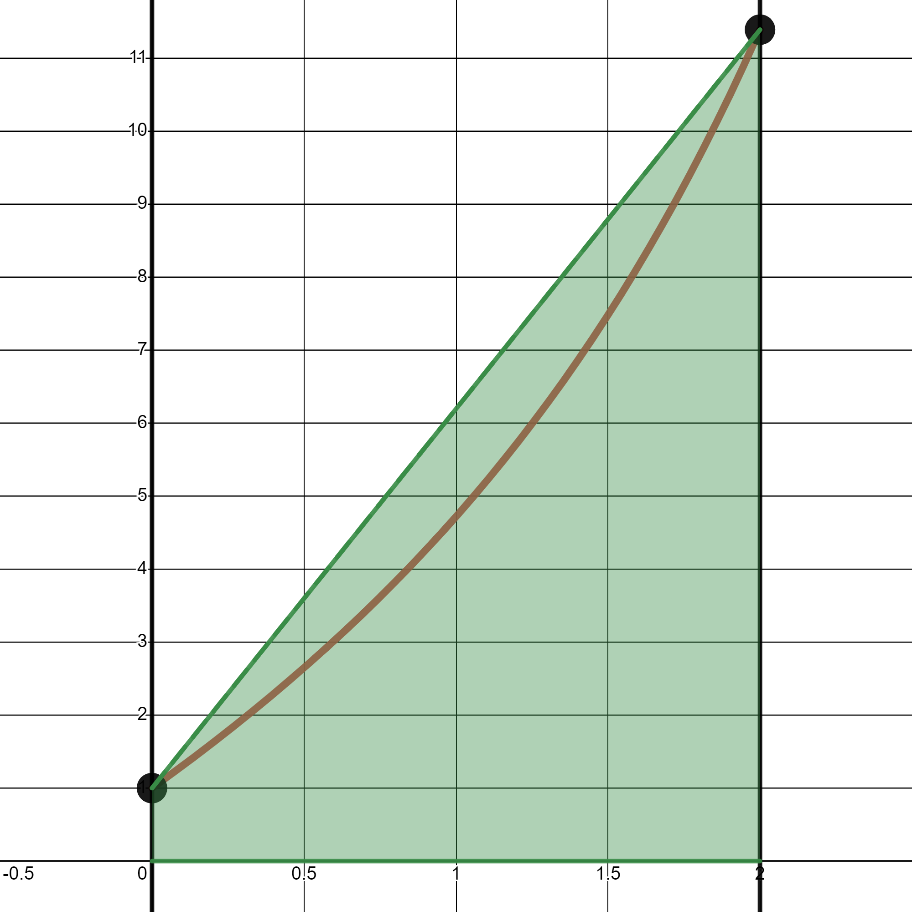

4.4. Integración numérica#
4.4.1. Casos en los que se utiliza#
Hay algunos casos en los que, en vez de buscar la primitiva de una función y aplicar la regla de Barrow, usaremos una fórmula de integración numérica. Sobre todo cuando
Sólo conocemos los valores de la función en un número finito de puntos.
Su primitiva no se expresa en términos de funciones elementales. Por ejemplo:
Su primitiva es muy costosa de calcular o evaluar. Por ejemplo:
Definition (Fórmula de integración numérica o de cuadratura)
Una fórmula de integración numérica o fórmula de cuadratura es una suma de la forma:
donde los puntos \(x_0\), \(x_1\), …, \(x_n\) son los llamados nodos de cuadratura y los valores \(\omega_0\), \(\omega_1\), …, \(\omega_n\) son los pesos asociados a cada nodo.
4.4.2. Fórmulas simples#
Fórmula del punto medio:
\[ \int_a^bf(x)\,dx\,\simeq\,(b-a)\,f\left(\frac{a+b}{2}\right) \,. \]
Fórmula del trapecio:
\[ \int_a^bf(x)\,dx\,\simeq\,\frac{b-a}{2}\,\big(f(a) + f(b)\big) \]
Fórmula de Simpson: Está basada en una interpolación cuadrática (tres nodos):
\[ \int_a^bf(x)\,dx \,\simeq\, \frac{b-a}{6}\,\Big(\,f(a)\,+\,4\,\, f(\frac{a+b}{2})\,+\,f(b)\Big) \]
{kind=link}
Example
Determinar una aproximación de \(\displaystyle \int_1^3 \sin(\sqrt{x}) \, dx\) mediante las fórmulas del trapecio y de Simpson, y comparar con la solución exacta:
Tomando el cambio de variable \(u = x^{1/2}\) e integrando por partes llegamos a:
Mientras que por integración numérica:
La fórmula de Simpson tiene en cuenta un nodo más que la del trapecio y en este ejemplo podemos ver que arroja una mejor aproximación.
4.4.3. Fórmulas compuestas#
La idea es sencilla: se divide el intervalo de integración, \([a,b]\), en subintervalos y en cada uno de estos se usa una fórmula de integración numérica simple.
El caso más habitual surge cuando tomamos \(n\) subintervalos, \([x_i, x_{i + 1}]\), de igual longitud \(h\). Es decir, cuando elegimos \(x_i = a + ih\), \(i = 0, 1, ..., n\), para un valor \(h = \frac{b - a}{n}\).
Entonces aproximamos la integral mediante una fórmula simple en cada subintervalo. Pero, ¡cuidado!:
para punto medio o Simpson los intervalos los tenemos que tomar los intervalos de tamaño \(2h\), es decir, de 3 en 3 puntos, porque necesitamos el punto medio de cada subintervalo, \([x_{2i-2}, x_{2i}]\),
para trapecio, como no necesitamos el punto medio, podemos tomar todos los subintervalos que, en este caso, tendrán tamaño \(h\): \([x_{i}, x_{i-1}]\).
Entonces tendremos:
Punto medio o Simpson compuestos, con \(n\) par: \(\displaystyle \int_a^b f(x)\,dx = \sum_{i=1}^{n/2} \int_{x_{2i-2}}^{x_{2i}} f(x)\,dx\).
Trapecio compuesto: \(\displaystyle \int_a^b f(x)\,dx = \sum_{i=0}^{n} \int_{x_{i-1}}^{x_{i}} f(x)\,dx\).
Ahora, dependiendo de la fórmula simple que elijamos tendremos:
Fórmula del punto medio compuesta:
\[\begin{eqnarray*} \int_a^b f(x)\,dx = \sum_{i=1}^{n/2} \int_{x_{2i-2}}^{x_{2i}} f(x)\, dx &\approx& \sum_{i=1}^{n/2} \left(x_{2i}-x_{2i-2}\right) f\left(x_{2i-1}\right) \\ &=& 2h\sum_{i=1}^{n/2} f\left(x_{2i-1}\right) \end{eqnarray*}\]
Fórmula del trapecio compuesta:
\[\begin{eqnarray*} \int_a^b f(x)\,dx = \sum_{i=1}^{n} \int_{x_{i-1}}^{x_{i}} f(x)\, dx &\approx& \sum_{i=1}^{n} \frac{h}{2} \left( f\left(x_{i-1}\right) + f\left(x_{i}\right) \right) \\ &=& \frac{h}{2} \left( f(x_{0}) + 2 \sum_{i=1}^{n-1}f(x_{i}) + f(x_{n}) \right) \end{eqnarray*}\]
Fórmula de Simpson compuesta:
\[\begin{eqnarray*} \int_a^b f(x)\,dx = \sum_{i=1}^{n/2} \int_{x_{2i-2}}^{x_{2i}} f(x)\, dx &\approx& \sum_{i=1}^{n/2} \frac{2h}{6} \left(f\left(x_{2i-2}\right) + 4f\left(x_{2i-1}\right) + f\left(x_{2i}\right) \right) \\ &=& \frac{2h}{6} \left( f(x_{0}) + 4\sum_{i=1}^{n/2} f(x_{2i-1}) + 2\sum_{i=1}^{n/2-1}f(x_{2i}) + f(x_{n}) \right) \end{eqnarray*}\]
4.4.4. Programación en Numpy#
Podéis ver la programación de estos métodos en la Sección Integración en Python.
Por favor, no dejéis de mirar con calma la forma en que estas fórmulas compuestas se implementan en una línea, jugando con el comando np.sum, lo que nos permite evitar por completo los bucles. Queda un ejercicio fantástico para el manejo de los arrays en Python…
4.4.5. Más información#
Y ahora os damos alguna referencia para que, si os apetece, ampliéis vuestro conocimiento sobre integración numérica:
En la wiki: https://es.wikipedia.org/wiki/Integración_numérica.
En esta página del Departamento de Matemáticas de la Universidad de Oviedo: https://www.unioviedo.es/compnum/laboratorios_py/Inte/Integrales.html.